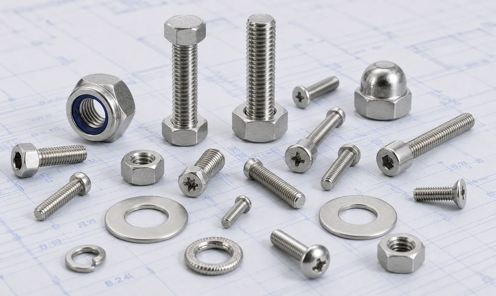

Stainless Steel 304 and 304L Fasteners including bolts, nuts, stud bolts, washers, and anchor bolts for food processing, pharmaceutical, water treatment, fabrication, and construction applications.
Stainless Steel 304 and 304L Fasteners are among the most widely used fastening solutions across industrial, commercial, and engineering applications due to their excellent corrosion resistance, durability, and versatility. Gururaj Infradesigns is a trusted Stainless Steel 304 Fasteners Manufacturer in India, supplying high-quality fasteners designed to deliver reliable performance in demanding service environments.
We also manufacture and supply Stainless Steel 304L Fasteners, a low-carbon variant of Grade 304 that offers improved weldability and enhanced resistance to carbide precipitation during welding operations. Our range includes bolts, nuts, stud bolts, washers, anchor bolts, U bolts, and socket head fasteners manufactured to meet diverse industrial fastening requirements.

Stainless Steel 304 and 304L are austenitic stainless steel grades containing chromium and nickel, providing excellent resistance to corrosion, oxidation, and atmospheric conditions. Their combination of strength, formability, and ease of fabrication makes them one of the most preferred materials for general-purpose fastening applications.
As a specialized grade within the broader range of Stainless Steel Fasteners, 304 and 304L fasteners are widely used in fabrication, process industries, food processing equipment, and structural applications. For environments exposed to chlorides and aggressive chemicals, industries often prefer Stainless Steel 316 Fasteners, while Stainless Steel 321 Fasteners are commonly selected for elevated-temperature applications.
| Property | Details |
|---|---|
| Grades | SS 304, SS 304L |
| Product Types | Hex Bolts, Stud Bolts, Anchor Bolts, U Bolts, Hex Nuts, Washers, Socket Head Bolts |
| Standards | ASTM, ASME, DIN, ISO |
| Sizes | M3 to M100 and Custom Sizes |
| Thread Type | Metric, UNC, UNF, BSW |
| Forms | Bolts, Nuts, Studs, Washers |
| Finish | Plain, Bright, Polished, Passivated |
| Certification | Mill Test Certificates Available |
The chromium-rich composition of Stainless Steel 304 and 304L provides excellent resistance to rust, oxidation, moisture, and various industrial environments. This makes these fasteners suitable for both indoor and outdoor installations.
Stainless Steel 304L contains lower carbon content, reducing the possibility of carbide precipitation during welding. This characteristic makes it particularly suitable for fabricated structures and welded assemblies.
These grades offer an excellent balance of mechanical strength, toughness, and ductility, enabling reliable fastening performance under varying operating conditions.
304 and 304L fasteners can be easily machined, fabricated, and installed, making them a preferred choice across construction, manufacturing, and engineering projects.
Their durability and corrosion resistance help minimize maintenance requirements while supporting long service life in a wide range of industrial applications.
| Element | 304 (%) | 304L (%) |
|---|---|---|
| Carbon | Max 0.08 | Max 0.03 |
| Chromium | 18.0 – 20.0 | 18.0 – 20.0 |
| Nickel | 8.0 – 10.5 | 8.0 – 12.0 |
| Manganese | Max 2.0 | Max 2.0 |
| Silicon | Max 1.0 | Max 1.0 |
| Phosphorus | Max 0.045 | Max 0.045 |
| Sulfur | Max 0.030 | Max 0.030 |
| Property | 304 | 304L |
|---|---|---|
| Tensile Strength | 515 MPa Min | 485 MPa Min |
| Yield Strength | 205 MPa Min | 170 MPa Min |
| Elongation | 40% Min | 40% Min |
| Hardness | 92 HRB Max | 92 HRB Max |
The excellent corrosion resistance and hygienic properties of these grades make them suitable for food manufacturing, dairy processing, and beverage production facilities.
Stainless Steel 304 and 304L fasteners are widely used in process equipment, tanks, pipelines, and machinery where reliable corrosion resistance is required.
Structural assemblies, architectural projects, handrails, support systems, and commercial construction projects frequently utilize these fasteners because of their durability and appearance.
Water handling systems, treatment plants, and utility infrastructure often employ 304 and 304L fasteners due to their ability to perform reliably in wet service conditions.
Engineering workshops, OEM manufacturers, and fabrication companies rely on these fasteners for equipment assembly, machinery manufacturing, and general industrial applications.
| Grade | Key Characteristics | Typical Applications |
|---|---|---|
| SS 304 & 304L | Excellent corrosion resistance and versatility | Fabrication, Food Processing |
| SS 316 & 316L | Improved chloride and chemical resistance | Marine, Chemical Plants |
| SS 321 | Better elevated-temperature stability | Heat Exchangers, Thermal Systems |
Stainless Steel 304 and 304L are considered the industry standard for general-purpose fastening applications. While Stainless Steel 316 Fasteners provide enhanced resistance in marine and chloride-rich environments, Stainless Steel 321 Fasteners are better suited for applications involving prolonged exposure to elevated temperatures.
| Industry | Reason for Selection |
|---|---|
| Food & Beverage Processing | Corrosion resistance and hygienic properties |
| Pharmaceutical Manufacturing | Cleanability and ease of maintenance |
| Water Treatment | Resistance to moisture and atmospheric corrosion |
| Construction & Infrastructure | Strength, durability, and aesthetic appearance |
| General Engineering & Fabrication | Versatility and ease of fabrication |
Stainless Steel 304 and 304L Fasteners are widely used across industries that require reliable corrosion resistance, durability, and ease of fabrication. Their versatility and cost-effectiveness make them one of the most preferred fastening materials for industrial, commercial, and engineering applications.
Gururaj Infradesigns supplies Stainless Steel 304 and 304L Fasteners in various sizes, thread forms, and specifications to support industrial fastening requirements across multiple sectors. Our products are designed to provide dependable fastening performance, dimensional accuracy, and long-term durability in demanding service conditions.
As a trusted supplier, we work with EPC contractors, fabricators, engineering companies, OEM manufacturers, and industrial buyers seeking reliable fastening solutions backed by consistent quality, technical support, and timely delivery.
Quality remains an important part of our manufacturing and supply process. All Stainless Steel 304 and 304L Fasteners undergo inspection for dimensional accuracy, thread quality, material integrity, and compliance with applicable standards to ensure dependable performance in service.
As an ISO Certified Company, we are committed to maintaining consistent quality standards and supplying reliable fastening solutions that meet the requirements of industrial, engineering, and commercial applications.
Selecting the right fastener grade depends on factors such as corrosion exposure, operating conditions, temperature requirements, and application demands. Choosing the appropriate material can help improve service life, reliability, and overall project performance. Our team can assist in identifying the right fastener grade, size, thread type, and specification based on your project requirements. We support EPC contractors, fabricators, OEMs, and industrial buyers with practical guidance and dependable fastening solutions for a wide range of applications.